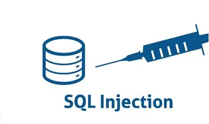

Injection SQL
Publié le par Louis
L'injection SQL est une technique d'attaque qui exploite une vulnérabilité de sécurité dans la couche base de données d'une application. Cette vulnérabilité se produit lorsque les entrées utilisateur ne sont pas correctement validées ou échappées avant d'être utilisées dans une requête SQL.
| Type d'injection | Description | Impact sur la base de données |
|---|---|---|
| In-band SQLi (Error-based) | Exploite les messages d'erreur de la base de données pour obtenir des informations sur sa structure | Révélation de la structure des tables et colonnes |
| In-band SQLi (Union-based) | Utilise l'opérateur UNION SQL pour combiner les résultats de plusieurs requêtes SELECT | Extraction massive de données sensibles |
| Inferential SQLi (Boolean-based) | Envoie des requêtes qui forcent l'application à retourner un résultat différent selon TRUE ou FALSE | Extraction lente des données bit par bit |
| Inferential SQLi (Time-based) | Force la base de données à attendre un temps spécifié avant de répondre pour déduire des informations | Surcharge du serveur et extraction d'informations |
| Out-of-band SQLi | L'attaquant ne peut pas utiliser le même canal pour lancer l'attaque et récupérer les résultats | Exfiltration de données via DNS ou HTTP |
| Source : Acunetix - Types of SQL Injection | ||
Prévention
Pour se protéger contre les injections SQL, il est recommandé d'utiliser des requêtes préparées (prepared statements), de valider toutes les entrées utilisateur, et d'appliquer le principe du moindre privilège pour les comptes de base de données.